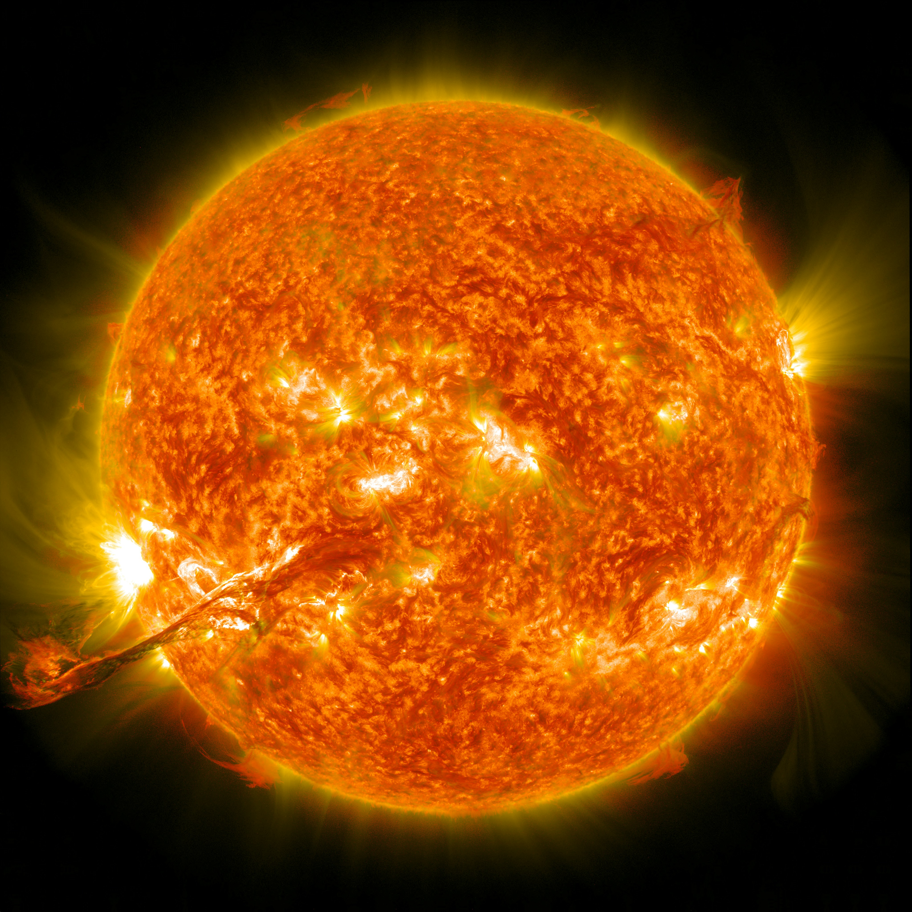
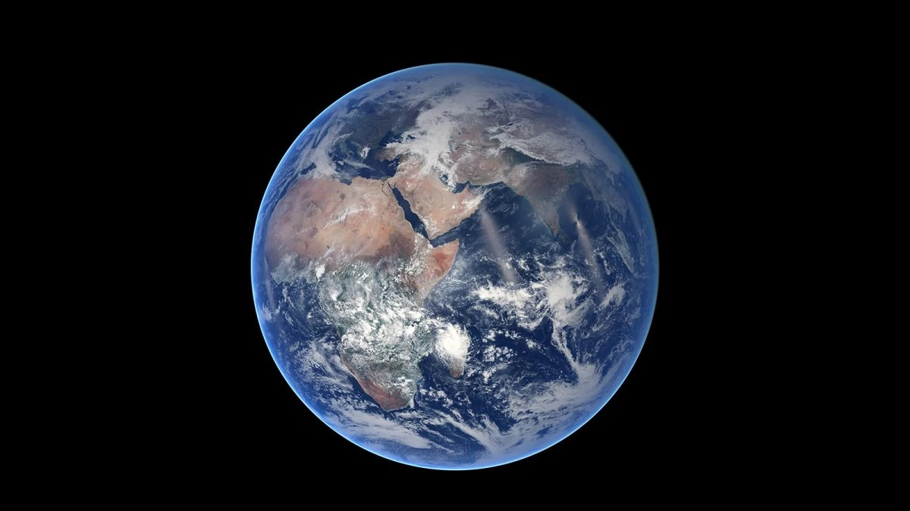
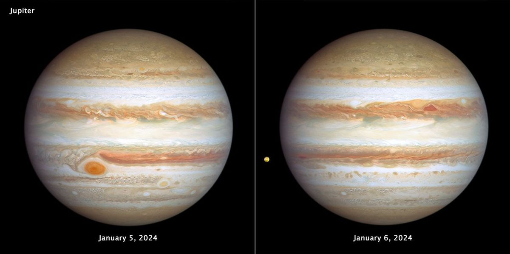
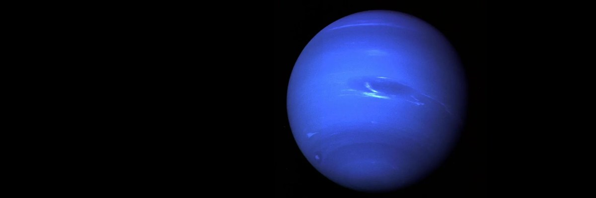
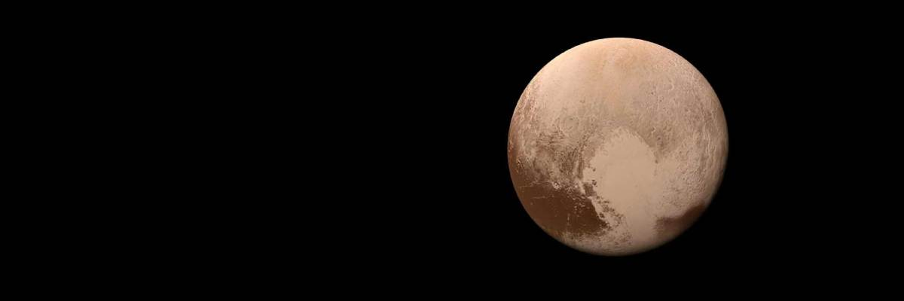

✦ OUR SOLAR SYSTEM ✦
🧠 ⚡ NASA FUSION DATA • REAL MOTION NAMES
planets dance • 4.6 billion years of fire

☀️ SUNNASA• 99.86% mass · 15.7M K core · 8 min to Earth · G2V yellow dwarf · 4.6 bn yrs · solar flares
WIKI 🌞
 ☿ MERCURY
☿ MERCURY
NASA • 0.4 AU · 430°C day / -180°C night · ice in shadows · 59d rotation · iron core
WIKI ☿
 ♀️ VENUS
♀️ VENUS
NASA • 462°C · sulfuric acid clouds · 90 atm pressure · retrograde · hottest planet
WIKI ♀️

🌍 EARTHNASA • only life · 71% ocean · 1 AU · 23.5° tilt · magnetic field · one moon
WIKI 🌍


♃ JUPITERNASA • 318 × Earth · Great Red Spot · 79 moons · 9h55m day · strongest magnetic field
WIKI ♃


♆ NEPTUNENASA • supersonic winds · 1,600 km/h · 14 moons · dark spot · 30 AU · 165y orbit
WIKI ♆

♇ PLUTONASA • 5 moons · Charon large · ice mountains · 248y orbit · heart glacier
WIKI ♇
⚡ NASA CORE DATA ⚡
SUN: 99.86% of mass
🌋 mind-blowing: Sun's core = 15.7 million K · 600 million tons H fused per sec · 4M tons converted to energy (E=mc²!)
🪐 Jupiter protects Earth from comets · Mars has largest volcano (25 km high) · Saturn would FLOAT in water!
🌀 Neptune wind speed up to 2,100 km/h (faster than sound on Earth) · Uranus was hit & tilted · Venus day longer than year
🔭 all data from NASA / Wikipedia sources — links above
⏳ 4.6 billion years
🌞 Sun rotates every 27 days (equator) ·
⭐ 8 light minutes to Earth · 1 AU = 150 million km
🛸 EXPLORE WIKIPEDIA
🌞 Sun rotates every 27 days (equator) ·
⭐ 8 light minutes to Earth · 1 AU = 150 million km
🛸 EXPLORE WIKIPEDIA
🌟 All planet names in motion • data from NASA & Wikipedia • animated deep space • fonts with high‑color grading 🌟